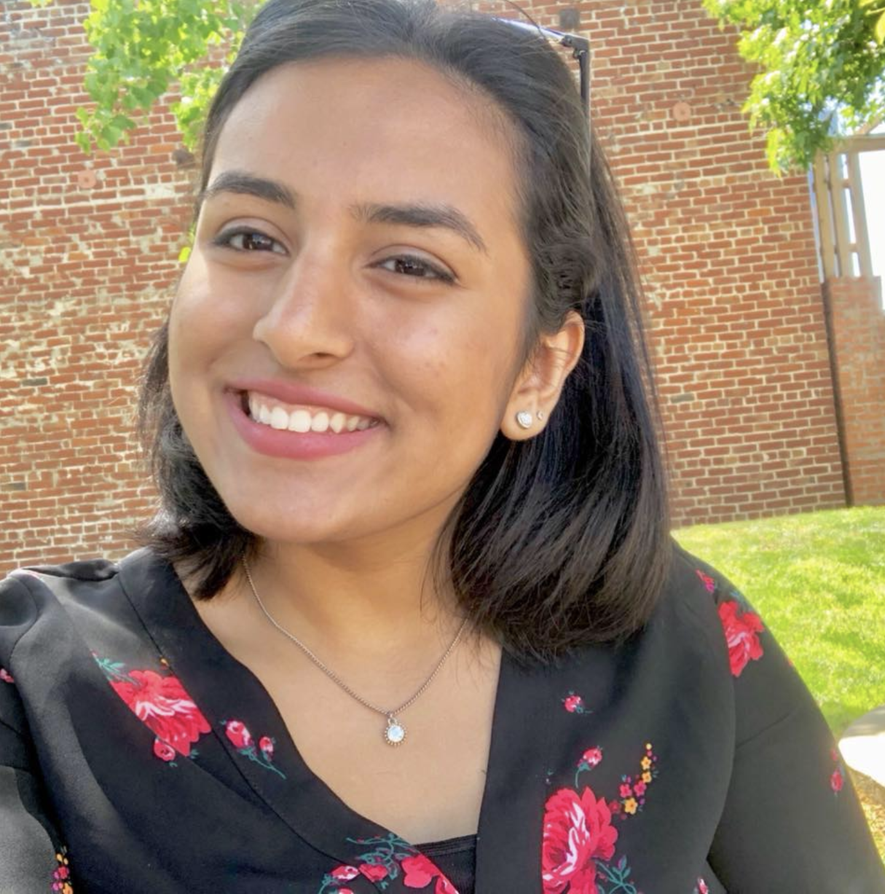

Nishka Chotai

Welcome to my website! Here, you can find out a little more about my interests, hobbies, and passions. Scroll down to learn more about me!
Activities:
President of Girls Who Code: As President of the Girls Who Code team of my school, I have been teaching and running projects after school in order to
provide girls interested in Computer Science an opportunity to meet women in tech, learn more about the industry, and begin their own projects.
President of Women's Empowerment Association: As President of the Women's Empowerment Association at Tino, I run weekly meetings where members of all
backgrounds at Tino can come together to discuss and learn about current and pressing women's issues. My team and I also organize and host Women's Day events!
Speech and Debate Captain: As a Speech and Debate captain at Tino, I have thourougly enjoyed passing my own skills and passions along to fellow Speech
members interested in improving their own skills.
Academics:
In college, I am interested in pursuing a mix of Cognitive and Computer Science. I love to read, write and speak, and I hope to pursue a major in linguistics and
combine my passion for coding along with it.
Contact Me:
Email: nishkachotai@gmail.com
Check out my linkedin below!